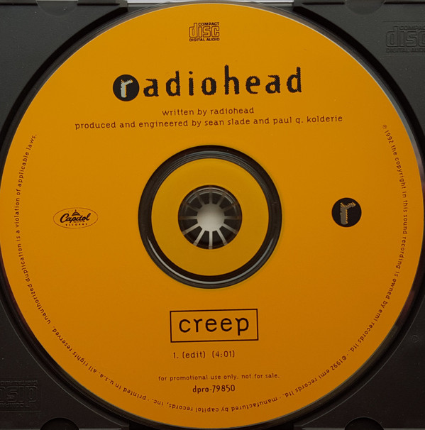

Creep Chord Progression
I - III - IV - iv
The creep chord progression starts with the tonal chord. It then goes into the secondary dominant chord, which is the dominant chord of the vi chord. However, follows then is the deceptive cadence. We expect the B chord (the III) chord to go the Em (the vi). But it deceives up, and goes to IV instead. Finally, it goes to the non-diantonic iv chord, which gives a very melancholic effect.